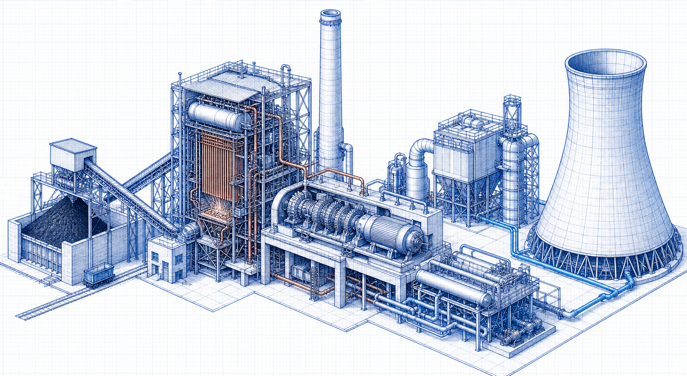

Coal-Fired Thermal Power Plant
Fuel and combustion, steam-water cycle, flue-gas cleaning and ash-management processes.
Process categoryLevel 2 process family
Follow the principal energy-conversion, steam-water, flue-gas-cleaning and utility processes used to generate electrical power.

Explore by process
Fuel and combustion, steam-water cycle, flue-gas cleaning and ash-management processes.
Process categoryGas-turbine, HRSG and steam-cycle processes used in combined-cycle generation.
Process categorySolar photovoltaic, wind, biomass and waste-to-energy power-generation process flows.
Process categoryDM-water production and cooling-water cycles that support dependable generation.
Process category